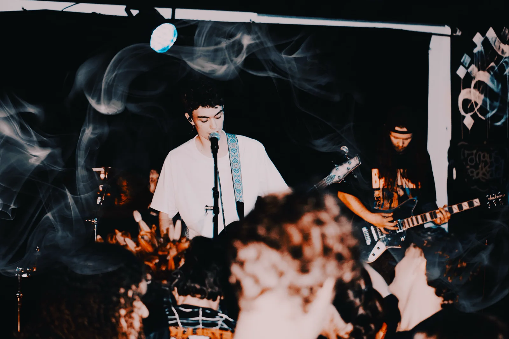

01 / PhotographyMothBelly Sounds · Milton, Brisbane · 9 October 2026
AfterDark
Live Music & Event Photography
Live performances and crowd atmosphere from a local MothBelly Sounds show.
Explore project
Self-initiated coverage of a local show featuring Chestr, Pelora, No Splits and Cedar. I photographed Chestr, Cedar and the crowd, capturing performances and the atmosphere throughout the night.
Photography and photo editing: Zac Nedianu